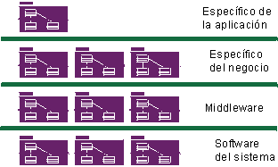

|

Arquitectura basada en componentes con capas
Una arquitectura de componentes es una arquitectura basada en componentes sustituibles, como se describe en Concepto: Componente. Como las arquitecturas de componentes se basan en componentes
modulares, sustituibles e independientes, facilitan la gestión de la complejidad y potencian la reutilización .
Los guiones de uso conducen Rational Unified Process (RUP) de principio a fin en todo el ciclo vital, pero las
actividades de diseño se centran en la noción de arquitectura de sistema y, en el caso de sistemas de software intensivo, en
arquitectura de software. El objetivo principal de las primeras iteraciones del proceso, sobre todo en la fase de la
elaboración, es producir y validar una arquitectura de software, que en el ciclo de desarrollo inicial adopta la
forma de un prototipo de arquitectura ejecutable que evoluciona gradualmente hasta convertirse en el sistema final en
las últimas iteraciones.
Una arquitectura ejecutable quiere decir una implementación parcial del sistema construido para demostrar funciones y
propiedades seleccionadas del sistema, en concreto las que satisfacen requisitos no funcionales. El objetivo de una
arquitectura ejecutable es mitigar riesgos relacionados con el rendimiento, el resultado, la capacidad, la fiabilidad y
otros, de modo que todas las posibilidades funcionales del sistema se vayan añadiendo en la fase de construcción con una base sólida, sin miedo a que se produzcan rupturas.
Si desea una introducción a la noción de arquitectura, y sobre todo arquitectura de software, y una explicación de por
qué es crucial esta noción, consulte Concepto:
Arquitectura de software.
RUP proporciona un modo sistemático y metódico para diseñar, desarrollar y validar una arquitectura. Se ofrecen
plantillas para la descripción de arquitectura en cuanto a conceptos de varias vistas de la arquitectura, y para la
captura de estilos de arquitectura, reglas de diseño y restricciones. La disciplina de análisis y diseño contiene actividades específicas con el objetivo de
identificar restricciones de arquitectura y elementos significativos en arquitectura, además de directrices sobre cómo
realizar elecciones de arquitectura. El proceso de gestión muestra cómo la planificación de las primeras iteraciones
toma en cuenta el diseño de una arquitectura y la resolución de los riesgos técnicos más importantes. Consulte la
disciplina de gestión de proyectos y todas las actividades relacionadas con el Rol: Arquitecto de software para obtener más información.
La arquitectura es importante por diversos motivos:
-
Le permite obtener y retener control intelectual sobre el proyecto para gestionar su complejidad y conservar la
integridad del sistema.
Un sistema complejo es más que la suma de sus partes, más que una sucesión de pequeñas decisiones tácticas
independientes. Debe tener una estructura coherente, unificadora que organice dichas partes sistemáticamente y debe
proporcionar reglas precisas sobre cómo ampliar el sistema sin que su complejidad escape al entendimiento humano.
La arquitectura establece los medios para conseguir una comunicación y una compresión mejoradas en todo el proyecto
al establecer un conjunto común de referencias, un vocabulario común con el que debatir problemas de diseño.
-
Es una base eficaz para la reutilización a gran escala.
Al definir con claridad los componentes principales y las interfaces importantes entre ellos, una arquitectura
permite reflexionar acerca de la reutilización, tanto la reutilización interna (que es la identificación de partes
comunes) como la reutilización externa (que es la incorporación de componentes estándar, ya fabricados). No
obstante, también permite la reutilización a mayor escala: la reutilización de la arquitectura en el contexto de
una línea de productos que trata diferentes funciones en un dominio común.
-
Proporciona una base para la gestión de proyectos.
La planificación y los asuntos de personal se organizan siguiendo las líneas de los componentes principales. Un
equipo de arquitectura unido y pequeño es el que toma las decisiones estructurales fundamentales, no se
distribuyen. El desarrollo, en cambio, sí se reparte en un conjunto de pequeños equipos, cada uno responsable de
una o varias partes del sistema.
El desarrollo basado en componentes es una variación del desarrollo general de aplicaciones en el que:
-
La aplicación se construye a partir de componentes ejecutables discretos que se desarrollan de forma
relativamente independiente, potencialmente por equipos diferentes. En RUP éstos se denominan "componentes
de ensamblaje". Consulte Concepto:
Componente para obtener una definición más detallada.
-
La aplicación se puede actualizar en incrementos más pequeños mediante la actualización de únicamente
los componentes de ensamblaje que componen la aplicación.
-
Los componentes de ensamblaje se pueden compartir entre aplicaciones mediante la creación de oportunidades de
reutilización, y también mediante la creación de dependencias entre proyectos.
-
Aunque no está estrictamente relacionado con el hecho de estar basado en componentes, las aplicaciones basadas
en componentes suelen ser distribuidas.
Los componentes de ensamblaje se derivan de lo siguiente:
-
Al definir una arquitectura modular, está definiendo, aislando, diseñando, desarrollando y probando componentes
bien formados. Estos componentes pueden probarse de forma individual e integrarse gradualmente para conformar el
sistema completo.
-
Además, algunos de estos componentes pueden desarrollarse para ser reutilizados, sobre todo los componentes que
proporcionan soluciones comunes a una amplia gama de problemas comunes. Estos componentes reutilizables, que pueden
ser más que una simple recopilación de programas de utilidades o bibliotecas de clases, forman la base de la
reutilización dentro de una empresa, aumentando la productividad y la calidad globales de software.
-
Más recientemente, el gran éxito comercial de infraestructuras de componentes, como CORBA, Internet, ActiveX,
JavaBeans, .NET y J2EE, ha desencadenado toda una industria de componentes ya preparados para diversos dominios, lo
que le permite comprar e integrar componentes en lugar que tener que desarrollarlos todos en la empresa.
El primer punto en la lista anterior explota los viejos conceptos de modularidad y encapsulación, lo que lleva un paso
más allá los conceptos de la tecnología orientada a objetos. Los últimos dos puntos de la lista cambian el desarrollo
de software desde la programación de línea a línea a la composición del software mediante el ensamblado de componentes.
RUP admite el
desarrollo basado en componentes de las siguientes maneras:
-
El enfoque iterativo permite identificar componentes de forma progresiva y decidir cuáles desarrollar, cuáles
reutilizar y cuáles comprar.
-
La arquitectura de software de RUP permite definir la estructura (los componentes y las formas de integración) que
incluye los mecanismos fundamentales y los patrones de interacción. Esto a su vez admite los aspectos de
planificación de la gestión de proyectos, ya que las dependencias de los componentes pueden ayudar a determinar qué
componentes pueden desarrollarse de forma concurrente y cuáles de forma secuencial.
-
Conceptos como paquetes, subsistemas y capas se utilizan durante el análisis y el diseño para organizar componentes
y especificar interfaces.
-
La realización de pruebas se organiza a partir de conceptos y poco a poco a partir de conjuntos mayores de
componentes integrados.
Para obtener más información sobre los componentes, consulte Concepto:
Componente.
|